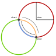

Initializes a new instance of the ArcSegment class.
The endpoint of the arc.
The arc size.
The rotation angle.
The arc type.
The sweep direction.
Gets or sets the rotation angle of the ellipse in degrees.
Gets or sets the arc type. Since there are always two different arcs with the same radius and the same sweep direction between two points, this parameter can be used
to determine which one is used. Valid values are small and large.
Gets or sets the x and y radius of the underlying ellipse on which the arc segment is based on. In case the ellipse is too small to span an arc between the start point and the end point, it will be scaled until it fits, preserving the aspect ratio of the ellipse.
Gets or sets the sweep direction. Since there are always two different arcs with the same radius and the same arc size between two points, this parameter can be used
to determine which one is used. Valid values are clockwise and counterclockwise.
Gets or sets the endpoint of the arc.
Returns the path segment that is defined by the specified description.
path segment description.
Returns the arc segment that is defined by the specified description.
Arc segment description.
Generated using TypeDoc
Describes an elliptical arc between two points. To define an arc segment you have to specify two points and an ellipse. Usually, there are two possible ellipses of the same size through two points, and on these two ellipses, there are four different ellipse segments which go from the first to the second point. To define how the arc segment looks like, you have to specify additional parameters as shown in the following picture:

smallcounterclockwisesmallclockwiselargecounterclockwiselargeclockwise